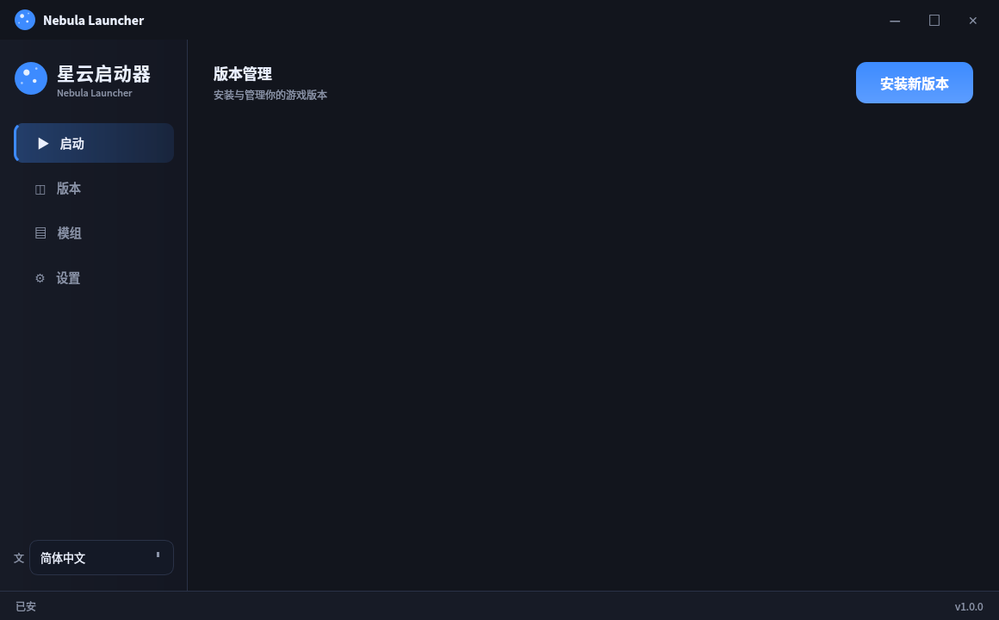

界面预览
深色优雅 · 简洁直观




把「启动」这件事，做得又快又好看
左侧导航 + 卡片布局，深蓝主题、圆角控件、流畅交互，开箱即用无需配置。
中英日韩、法德西俄、阿拉伯语、印地语……一键切换，全世界玩家都能用。
原版、Fabric、Quilt、Forge 一键安装，版本随意切换，兼容你的模组生态。
连接 GitHub Releases 模组仓库、Modrinth 官方源，需要哪个装哪个。
内置 Aikar's Flags 与 GC 调优，防内存流失、提升帧率，后台占用最低。
启动后自动关闭自身，只让 Minecraft 单独运行，干净利落。
深色优雅 · 简洁直观

启动器内置对接 GitHub Releases 的模组仓库——把模组上传到 Release，所有玩家即可在启动器「模组中心」一键下载安装。
{
"repo": "et2416444244/NebulaLauncher-Mods",
"source": "GitHub Releases",
"mods": [
{
"name": "sodium.jar",
"tag": "v1.0",
"compatible": "1.20.1 / 1.21"
}
]
}
开箱即用 · Windows / macOS / Linux
使用方式：pip install -r requirements.txt 后 python main.py 即可启动。
代码完全开源，欢迎 Star、Issue、PR